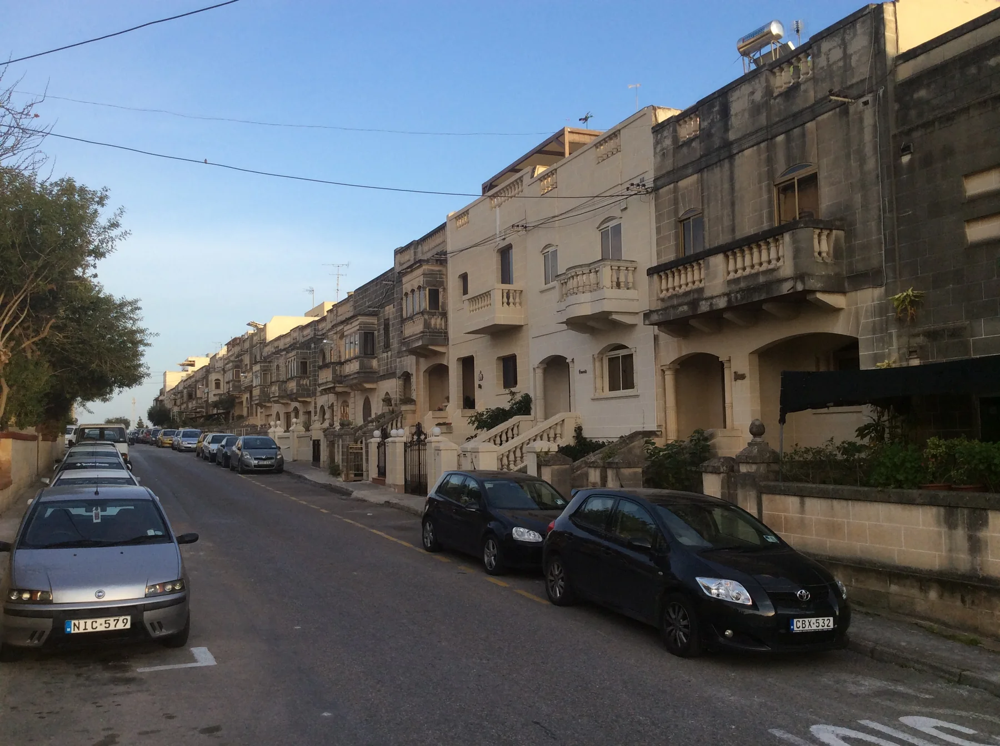

A locality label alone cannot tell you whether a home sits on the Birkirkara or Msida side. Verify it from the property record before presenting council services or routes.

IS-SWATAR · MALTAOne neighbourhood.
One neighbourhood.
Two council contexts.
Residential streets connect the Birkirkara and Msida sides of Swatar. The exact address still decides the council, the practical route and what belongs in a viewing-day plan.
READ THE ADDRESS
Swatar needs a precise label.
Malta's official address register lists both Is-Swatar, Birkirkara and Is-Swatar, L-Imsida. That split matters more than a broad neighbourhood pin: it keeps civic details accurate and prevents nearby districts from being folded into one vague sales story.
Parking, pavement continuity, gradient and frontage belong to the street in front of the home. No neighbourhood-wide promise replaces that check.
Birkirkara town, the Msida waterfront, Tal-Qroqq, Mater Dei and Santa Venera are useful orientation names, but they are not interchangeable with Swatar.
St George Preca Parish.
The Archdiocese maintains the current parish-church record for Is-Swatar. It establishes a local community anchor without implying that every Swatar address belongs to the same immediate street setting or is within a stated walk.
Archdiocese parish record ↗A verified public park.
Parks in Malta identifies Swatar Playground on the Msida side, with play equipment, an outdoor gym and accessible pathways. Those facilities apply to this named park; live access and the route from a home still need a separate check.
Parks in Malta record ↗EVERYDAY CHECKS
Practical anchors, current sources.
These operator and public-service pages help plan a viewing day. They are not rankings and do not claim that any destination is nearest to a listed home. Recheck status, hours, stops and the permitted route before travelling.
Happy Shopper
The operator lists a Swatar location on Triq Dijonisju Famucelli and identifies the locality as Swatar, L-Imsida.
Operator locations ↗SPAR Swatar
SPAR publishes a dedicated Swatar store page. Use its live record for current services and opening information.
SPAR operator page ↗Live bus directory
Malta Public Transport currently publishes Route 32 as Swatar and lists Swatar stops on other routes. This preview freezes no departure or frequency.
Current Route 32 page ↗Msida Campus
The University of Malta identifies its main campus as the Msida Campus. That is regional orientation, not proof of a commute time or a particular entrance near a listing.
University contact page ↗FOOD WITHOUT A RANKING
Two licensed records, no “best of” claim.
The Malta Tourism Authority's current public register supplies two Swatar examples without borrowing review scores or directory copy. The records establish a licensed name and address context; they do not establish a menu, opening hours, price, quality or proximity to either listed home.
Bun Burgers
The current MTA register lists Bun Burgers as a licensed snack bar on Triq Girgor Gatt, Swatar Birkirkara. Check the live register before travelling.
MTA licensed-establishment register ↗The Executive Cafe
The same current register lists The Executive Cafe (2) on Triq Girgor Gatt, Swatar Birkirkara. This is a second sourced example, not an endorsement.
MTA licensed-establishment register ↗No invented shortcut.
This preview draws no council boundary, property pin, straight-line walk, bus schedule, car-traffic estimate or taxi price. The shared public inventory coordinate is a locality centre only and cannot identify either home's street, council side or route.
Open the neighbourhood overview only when you need it.
The map frames Swatar and surrounding place labels for orientation. It deliberately draws no council boundary, route, distance, travel time or listing location and loads from OpenStreetMap only after your click.
Address Registrar · Archdiocese of Malta · Parks in Malta · University of Malta · SPAR Malta · Happy Shopper · Malta Public Transport · MTA licensed establishments
No ranking, fixed opening hours, menu, property-specific distance, guaranteed view, parking claim, accessibility promise or locality-wide journey time is implied.